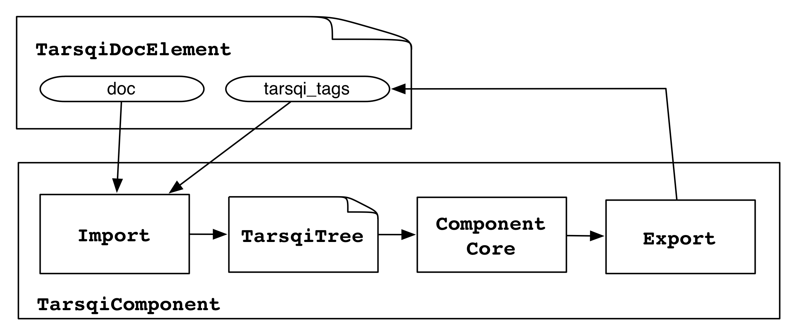

The EvitaWrapper class is handed the TarsqiDocument and loops over all docelement Tags in it, creating an Evita instance for each of them and then procesing the elements one by one. The Evita instance has slots for the TarsqiDocument, the docelement tag and a TarsqiTree instance which contains a document tree for the part of the TarsqiDocument that is being processed. The TarsqiTree instance itself knows what TarsqiDocument it belongs to and what docelement Tag it was created for since these were handed in from the Evita instance. The TarsqiTree instance also has a list of daughters as well as some other attributes that are ignored here because they are not used by Evita.
| components.evita.main.Evita | |||||||||
| tarsqidoc | an instance of docmodel.document.TarsqiDocument | ||||||||
| docelement | an instance of docmodel.document.Tag with name=docelement, the element of the TarsqiDocument that is being processed by Evita | ||||||||
| doctree |
|
||||||||
Since the TarsqiTree and its elements are the starting point for Evita and Slinket processing we will dwell on them a bit longer. Here is a pretty print of the TarsqiTree for "The dog barked yesterday.".
<Sentence position=0>
<NounChunk position=0 checkedEvents=False event=None eid=None>
<Token position=0 pos=DT text=The>
<Token position=1 pos=NN text=dog>
<VerbChunk position=1 checkedEvents=False event=None eid=None>
<Token position=0 pos=VBD text=barked>
<NounChunk position=2 checkedEvents=False event=None eid=None>
<TIMEX3 tid=t1 type=DATE value=20160103>
<Token position=0 pos=NN text=yesterday>
<Token position=3 pos=. text=.>
A TarsqiTree contains sentences, chunks, tokens and event and time constituents. It is created from a TarsqiDocument and a Tag by the create_tarsqi_tree() method in components.common_modules.tree. This method uses the intermediary Node object to create a tree hierarchy and then replaces all Node objects with instances of Sentence, NounChunk, VerbChunk, Token, AdjectiveToken, EventTag and TimexTag (all defined in submodules of components.common_modules). These tree elements are all subclasses of Constituent and have the following instance variables:
| components.common_modules.constituent.Constituent | |
| tree | contains the TarsqiTree instance at the top of the tree, through this tree a constituent also has access to the TarsqiDocument and the Tag |
| parent | a reference to the parent, which is an instance of TarsqiTree or one of the subclasses of Constituent |
| position | an integer reflecting the constituent's position in the dtrs list of the parent |
| dtrs | a list of daughters, this is the empty list for leaf nodes |
| begin | the beginning offset in the SourceDoc |
| end | the ending offset in the SourceDoc |
The TarsqiTree is used by Tarsqi components as a common data structure to process over. For example, Evita and Slinket both run patterns over elements of this tree and major parts of the Evita and Slinket code are expressed as methods on constituents. Components may update elements of the tree, but it is important to note that those changes are local and will not be handed over to a next component in the pipeline. Instead, results from processing have to be exported to the TagRepository on the TarsqiDocument, as in the following figure.
Components import the TarsqiDocument and for each Tag create a TarsqiTree using the TarsqiDocument's data. They then use this sequence of trees one by one as input to processing and export the resulting tags back into the TagRepository. The next component in the pipeline will start afresh with a new set of TarsqiTrees which will be created from the updated TarsqiDocument.
Back to Evita...
The EvitaWrapper takes the TarsqiDocument on initialization and its process() method loops over all document elements, creating an Evita instance for each of them and then running the process_element() method. The process_elements() method loops through all Sentence instances in the TarsqiTree in Evita's doctree variable, and then loops through all daughters of the Sentence. For each daughter it attempts to create an event with the createEvent() method, which is implemented on the NounChunk and VerbChunk classes.
As an illustration, below is a fragment from the code in the Evita class in components.evita.main. Note that the code is slightly simplified and edited and that it is not well-formed Python code anymore, this is true for all code fragments shown in this document.
components.evita.main.Evita
process_element():
self.doctree = create_tarsqi_tree(self.tarsqidoc, self.docelement)
for sentence in self.doctree:
for node in sentence:
if not node.checkedEvents:
node.createEvent()
Nominal events are created with createEvent() on NounChunk and verbal and adjectival events are created with createEvent() on VerbChunk. Adjectival events are initially dealt with by VerbChunk because they are created only if preceded by certain verb groups, which is recognized by VerbChunk. The following three sections give details on how the three kinds of events are created.
Most of the code that deals with nominal events is expressed on the NounChunk class, which is a sublass of Chunk and Constituent. Recall that Constituent defines instance variables tree, parent, position, dtrs, being and end. These are all filled in during TarsqiTree construction by create_tarsqi_tree(), as mentioned earlier in this section. Several other instance variables are defined on chunks. The table below has just the variables added by NounChunk that are relevant for Evita.
| components.common_modules.chunks.NounChunk | |||||||||||||
| phraseType | the chunktype, basically the chunk tag generated by the chunker, always 'ng' for noun chunks | ||||||||||||
| head | an integer reflecting the position of the head token in the chunk's dtrs variable, always set to -1 for noun chunks, picking out the last element | ||||||||||||
| gramchunk |
|
||||||||||||
| gramchunks | the empty list for noun chunks, but can be non-empty for verb chunks | ||||||||||||
| checkedEvents | a flag indicating whether the chunk has already been checked for events, initially set to False; if set to True, createEvent() will never be run for the chunk | ||||||||||||
The GramNChunk instance in the gramchunk variable contains the grammatical features for the noun chunk. This instance has a pointer back to the NounChunk it is in and four grammatical features. Three of them are typically 'NONE' for nouns, and it may sound a wee bit odd for nouns to have tense, aspect or modality, but in some cases the nominal will inherit these from a governing verb, for example, with phrases like "This would be a tragedy". When the verb chunk "be" tries to create an event it will recognize that the actual event is the nominal following it, it will then try to create an event on that nominal and hand it the verb chunk features. This is explanined further below in the section on verbal events.
The top-level of the createEvent() code for nominals looks as follows:
components.common_modules.chunks.NounChunk
createEvent(self, gramvchunk=None):
self.gramchunk = GramNChunk(self, gramvchunk)
if self.isEventCandidate():
self._conditionallyAddEvent()
GramNChunk creation for the NounChunk is a simple affair, setting the defaults and then leting them be overwritten if features were handed in from the governing verb. The main work occurs in the isEventCandidate() method on the chunk, which first checks whether the noun chunk is syntactically able to be an event, which is the case if the chunk has a head, the head is a common noun and the chunk is not a time expression. Next, it checks whether the noun chunk can semantically be an event. It does this by looking up the head token in Wordnet and by running a simple Bayesian classifier. This is where the heavy lifting occurs. The general logic is as follows:
The exact application of this logic is driven by settings in the components.evita.settings module, which has a couple of variable that determine whether the Bayesian classifier is used and how WordNet lookup determines event-hood.
components.evita.settings EVITA_NOM_DISAMB = True EVITA_NOM_CONTEXT = True EVITA_NOM_WNPRIMSENSE_ONLY = True
The first variable determines whether the classifier will actually apply and the second whether the classifier will take into account contextual features (as opposed to just the word). The third variable determines the choice to be made in step 3, the default is to decide that a token is an event if its primary sense is.
The resources used by the logic above are in library/evita/dictionaries. Here is a short desciption of the WordNet and classifier resources.
'drawing': [12.0, 2.0], 'negligence': [0, 2.0], 'detail': [33.0, 9.0], 'absorption': [0, 7.0], 'crack': [6.0, 1.0],From this fragment you can read that there were 12 occurrences where 'drawing' was not an event and 2 occurrences where it was. (By the way, it is not clear why these numbers are floats, probably a historical accident). The file semcorNomEventContextProb.pickle contains probability adjustments for the nominals given a small amount of features (definite versus indefinite and singular versus plural). The numbers are adjustments for the non-event probability and the event probability respectively. Adjustments for two of the nominals above are given below.
'drawing': {
'DEF': (0.1, 0.1),
'INDEF': (0.9, 0.9),
'NN': (0.34, 0.9),
'NNS': (0.66, 0.1) }
'absorption': {
'DEF': (0.5, 0.166666),
'INDEF': (0.5, 0.833333),
'NNS': (0.5, 0.3),
'NN': (0.5, 0.7) }
For example, if we take 'drawing', which has a proability of 0.14 of being an
event and 0.86 of not being an event, and say that we have the features INDEF
and NN, then the adjusted event probability would be 0.14 * 0.9 * 0.9 = 0.11 and
the adjusted non-event probability would be 0.86 * 0.9 * 0.34 = 0.20, after which
the adjusted chance of not being an event is still bigger. Note that the
combined probabilities are not 1 anymore.
There is some ancient code in library/evita/nominal_trainer.py which does
not work, but which was originally used to create the pickle files. The content
of the pickle files is also listed in a friendlier format in files with the .txt
extension in the same directory.
Back to the Evita nominal event logic. If the isEventCandidate() method returns true then the _conditionallyAddEvent() method will perform a few last checks and then add an event to the TarsqiDocument by asking the TarsqiTree to do the honours:
components.common_modules.chunks.Chunk
_conditionallyAddEvent(self, gramChunk=None):
gchunk = self.gramchunk if gramChunk is None else gramChunk
if (gchunk.head
and gchunk.head.getText() not in forms.be
and gchunk.head.getText() not in forms.spuriousVerb
and gchunk.evClass):
self.tree.addEvent(Event(gchunk))
This method is defined on Chunk and is used by VerbChunks as well. The core is to invoke addEvent() on the TarsqiTree instance in the tree variable, handing it an Event instance which was created from the GramNChunk (or GramVChunk for verb chunks).
components.common_modules.tree.TarsqiTree
addEvent(self, event):
event_attrs = dict(event.attrs)
eid = self.tarsqidoc.next_event_id()
eiid = "ei%s" % eid[1:]
event_attrs['eid'] = eid
event_attrs['eiid'] = eiid
token = event.tokens[-1]
self.tarsqidoc.add_event(token.begin, token.end, event_attrs)
The TarsqiTree instance is handed most event features (tense and aspect and so on), but it is responsible for generating unique identifiers for the event (which it gets from the TarsqiDocument). Finally, it asks the TarsqiDocument to add the tag to the tags TagRepository, thereby exporting the component results as shown in the picture earlier in this section.